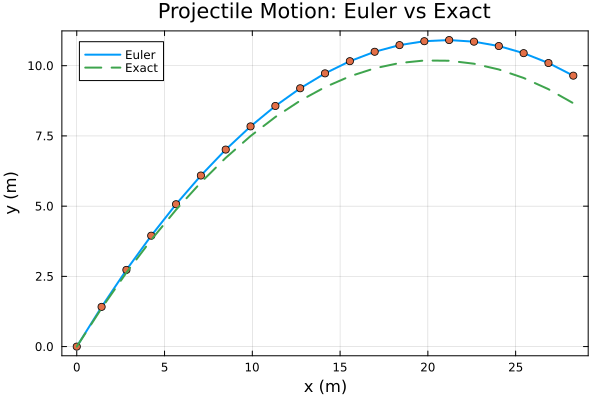

When one calculation becomes many, we repeat deliberately, store ordered histories in vectors, and step a model forward in time.
A computer does not see a continuous curve. It updates and stores samples at many times until a stated stopping event.
Loops replace copied calculations. Vectors keep the history ordered; together they make the update rule and its effect inspectable.
v = [10, 20, 30, 40]
empty_int = Int[]
println(v)
println(empty_int)
println(zeros(5))
println(ones(4))
println(collect(1:5))
println(range(0, 1; length=6))[10, 20, 30, 40]
Int64[]
[0.0, 0.0, 0.0, 0.0, 0.0]
[1.0, 1.0, 1.0, 1.0]
[1, 2, 3, 4, 5]
0.0:0.2:1.01:5 is a range, not a vector; collect materializes it. zeros/ones build ready-made vectors; Int[] starts an empty integer vector.
v = [10, 20, 30, 40, 50]
println(v[1])
println(v[end])
println(v[2:4])
println(v[2:end])
v[2:3] = [99, 88]
println(v[[1, 3, 5]])
indices = [2, 3]
println(v[indices])
println(v)10
50
[20, 30, 40]
[20, 30, 40, 50]
[10, 88, 50]
[99, 88]
[10, 99, 88, 40, 50]Julia starts at index 1; end is the last position; slices keep both ends. Assigning to a slice works, and v[[1,3,5]] selects several positions.
a = [1, 2, 3]
b = a
c = a[1:2]
d = copy(a)
e = @view a[1:2]
a[1] = 2
println("a[1]=", a[1], " b[1]=", b[1], " c[1]=", c[1], " d[1]=", d[1], " e[1]=", e[1])a[1]=2 b[1]=2 c[1]=1 d[1]=1 e[1]=2b = a is an alias (same storage); copy(a) is independent; @view shares storage without copying; a slice copies. Use a snapshot when you store a history.
v = [1, 2, 3]
push!(v, 4); println(v)
append!(v, [5, 6]); println(v)
pop!(v); println(v)
insert!(v, 2, 99); println(v)
deleteat!(v, 2); println(v)
w = vcat(v, [7, 8]); println(w); println(v)[1, 2, 3, 4]
[1, 2, 3, 4, 5, 6]
[1, 2, 3, 4, 5]
[1, 99, 2, 3, 4, 5]
[1, 2, 3, 4, 5]
[1, 2, 3, 4, 5, 7, 8]
[1, 2, 3, 4, 5]The trailing ! marks a mutating operation. push! adds one value, append! adds each element, vcat builds a new vector.
a = [1.0, 2.0, 3.0]
b = [4.0, 5.0, 6.0]
println(a + b)
println(2a)
println(sum(a)); println(maximum(a)); println(minimum(a)); println(length(a))
println(a .* b)
println(a .^ 2)
println(sqrt.(a))
using LinearAlgebra
println(dot(a, b))
println(round(norm([1,1]); digits=4))[5.0, 7.0, 9.0]
[2.0, 4.0, 6.0]
6.0
3.0
1.0
3
[4.0, 10.0, 18.0]
[1.0, 4.0, 9.0]
[1.0, 1.4142135623730951, 1.7320508075688772]
32.0
1.4142The dot means element-by-element: .*, .^, sqrt.. sum/maximum/minimum summarize; LinearAlgebra supplies dot and norm.
v = [10, 20, 30]
for i in 1:3
println(i)
end
for x in v
println(x)
end
for i in eachindex(v)
println("index = ", i, ", value = ", v[i])
end
for (i, x) in enumerate(v)
println(i, " => ", x)
end1
2
3
10
20
30
index = 1, value = 10
index = 2, value = 20
index = 3, value = 30
1 => 10
2 => 20
3 => 30Values only: for x in v. Indices: eachindex. Both: enumerate.
begin v = [3, 5, 8, 2]
total = 0
for x in v
total += x
end
println(total)
println(sum(v))
end18
18begin f = 1
for n in 1:5
f = f * n
end
println(f)
end120Initialize outside the loop, combine one item per repetition, keep the result. begin … end groups the statements of one example.
begin v = [-2, 3, 0, 7, -1]
count_positive = 0
for x in v
if x > 0
count_positive += 1
end
end
println(count_positive)
end2begin v = [2, 3, 5, 7]
running = 0
cumulative = Int[]
for x in v
running += x
push!(cumulative, running)
end
println(cumulative)
println(cumsum(v))
end[2, 5, 10, 17]
[2, 5, 10, 17]Push each new value to store the history at every step — the pattern we will use for a trajectory.
dotusing LinearAlgebra
begin
a = [1.0, 2.0, 3.0]
b = [4.0, 5.0, 6.0]
s = 0.0
for i in eachindex(a, b)
s += a[i] * b[i]
end
println(s) # 32.0
println(dot(a, b), " ", a⋅b) # 32.0 32.0
end32.0
32.0 32.0Aligned vectors, one accumulator, matching indices — the manual version of dot.
using Statistics
measurements = [1.0, 2.0, 3.0] # m
println(mean(measurements))
println(std(measurements))2.0
1.0Statistics is part of Julia. std uses the corrected sample denominator n−1. A trajectory is not automatically an independent repeated-measurement set.
for n in 1:10
if n^2 >= 20
println("first square at least 20 is $(n^2)")
break
end
endfirst square at least 20 is 251
2
3Test, then update. Missing the increment repeats forever; a wrong inequality can skip a boundary event.
For a small interval Δt: rₙ₊₁ = rₙ + vₙ Δt, then vₙ₊₁ = vₙ + aₙ Δt with vector state r=(x,y), v=(vx,vy), a=(0,−g).
No drag, uniform gravity, +x horizontal and +y upward. Position uses the old velocity; that is the published Euler convention.
using Plots
let
trajectory_x = Float64[]
trajectory_y = Float64[]
velocities_x = Float64[]
velocities_y = Float64[]
g = 9.81; # gravity in m/s^2
speed = 20.0; # initial speed in m/s
theta = pi / 4; # initial angle in radians
dt = 0.1; # time step in seconds
T = 2.0 # total time in seconds
r = [0.0, 0.0] # m
v = [speed * cos(theta), speed * sin(theta)] # m/s
a = [0.0, -g] # m/s^2
N = round(Int, T / dt) # number of time steps
trajectory_x = [r[1]]
trajectory_y = [r[2]]
velocities_x = [v[1]]
velocities_y = [v[2]]
for step in 1:N
r = r + v * dt
v = v + a * dt
push!(trajectory_x, r[1])
push!(trajectory_y, r[2])
push!(velocities_x, v[1])
push!(velocities_y, v[2])
end
println("Euler final position: ", round(r[1]; digits=4), ", ", round(r[2]; digits=4))
r0 = [0.0, 0.0]
v0 = [speed * cos(theta), speed * sin(theta)]
p = plot(title="Projectile Motion: Euler vs Exact", xlabel="x (m)", ylabel="y (m)", frame=:box)
p = plot!(p, trajectory_x, trajectory_y, label="Euler", lw=2)
p = scatter!(p, trajectory_x, trajectory_y, label=:none, lw=2)
exact_trajectory_x = Float64[]
exact_trajectory_y = Float64[]
ts = 0:dt:T
for t in ts
push!(exact_trajectory_x, r0[1] + v0[1] * t + 0.5 * a[1] * t^2)
push!(exact_trajectory_y, r0[2] + v0[2] * t + 0.5 * a[2] * t^2)
end
p = plot!(p, exact_trajectory_x, exact_trajectory_y, label="Exact", lw=2, ls=:dash)
display(p)
endEuler final position: 28.2843, 9.6453Fixed final time T before landing, so every run we compare ends at the same time. The coordinate and velocity vectors store one sample per step. Run the complete let block: its simulation and plot share a local work area; we revisit scope with functions. Run the complete let block: its simulation and plot share a local work area; we revisit scope with functions.
The markers are the stored Euler samples; the dashed curve is the exact parabola. At t=T the sample sits above the exact point by g·T·dt/2 = 0.981 m.

using LinearAlgebra
let
g = 9.81; speed = 20.0; theta = pi / 4; T = 2.0
r0 = [0.0, 0.0]
v0 = [speed * cos(theta), speed * sin(theta)]
a = [0.0, -g]
for dt in (0.2, 0.1, 0.05, 0.02)
r = copy(r0); v = copy(v0)
N = round(Int, T / dt)
for step in 1:N
r = r + v * dt
v = v + a * dt
end
exact = r0 + v0 * T + 0.5 * a * T^2
println("dt = $dt, error = ", round(norm(r - exact); digits=4), " m")
end
enddt = 0.2, error = 1.962 m
dt = 0.1, error = 0.981 m
dt = 0.05, error = 0.4905 m
dt = 0.02, error = 0.1962 mHalving dt halves the error: first-order convergence, with r_N − r_exact(T) = −½a·T·Δt. Test ten times smaller before explaining.
Euler omits ½a(Δt)² per step. Take a half step, evaluate the derivative there, then take the full step: a second-order method (exact here for constant acceleration). More clever sample points give RK4. Optional background — not required in this course.
All vectors grow one entry per step and start at the initial state.
State which rule stopped the loop: ground crossing or end of the simulation window.
Halve dt and compare. It addresses timestep error, not omitted physics.
Use a bounded while search for the first cooling sample at or below a threshold; equality counts.
A hammer throw with quadratic drag: read five inputs, loop until the first below-ground sample or T, print the distance, save the trajectory figure.
Optional bonus: compare forward Euler, Euler–Cromer, and velocity Verlet by final energy. Going further: random walks and diffusion — one path is not an ensemble statistic.
Runnable lecture notebook · Next: matrices and rotations in Week 4; functions in Week 5.
The remaining examples from the written chapter, in order.
for n in 1:3
println(n)
end1
2
3for time in 0:2:10 # s
println("time = $time s")
endtime = 0 s
time = 2 s
time = 4 s
time = 6 s
time = 8 s
time = 10 sbegin v = [4, 9, 2, 7]
largest = v[1]
for x in v
if x > largest
largest = x
end
end
println(largest)
end9